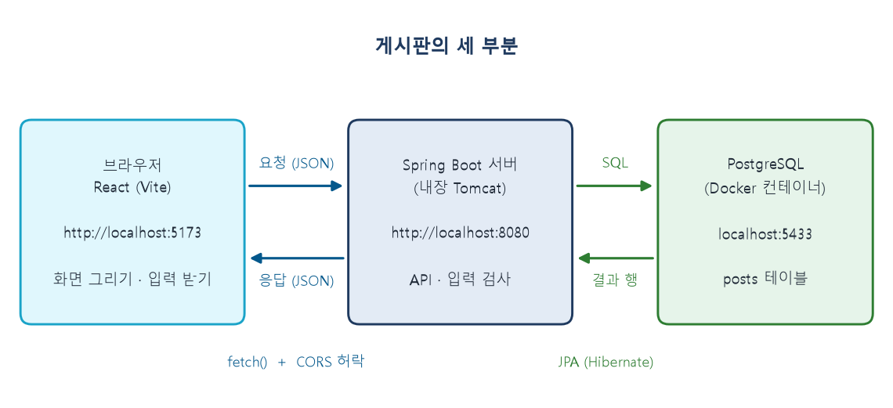

0장. 과정 안내와 실습 준비
이 과정에서 만드는 것
이 과정은 React 를 처음 배우는 사람을 위한 40시간(5일) 과정이다. 장마다 작은 예제를 하나씩 쌓아 올린다. 마지막 9장에서는 지금까지 배운 것을 모두 써서 진짜 데이터베이스에 글을 저장하는 게시판을 만든다.

게시판은 세 부분이 함께 일한다. 브라우저에서 화면을 그리는 React, 요청을 받아 처리하는 Spring Boot 서버, 글을 보관하는 PostgreSQL 데이터베이스다. PostgreSQL 은 Docker 로 띄운다.

이 과정을 마치면 2단계 React 심화 과정으로 이어진다. 심화 과정에서는 이 게시판에 회원가입·로그인 기능을 더한다.
진행 순서 (40시간)
| 일차 | 장 | 내용 | 시간 |
|---|---|---|---|
| 1일 | 0장 | 과정 안내, 프로그램 설치 확인 | 0.5 |
| 1장 | React 시작하기 - Vite 로 첫 프로젝트 만들기 | 2.5 | |
| 2장 | React 를 위한 JavaScript 문법 | 3 | |
| 3장 | JSX - 자바스크립트 안의 HTML | 2 | |
| 2일 | 4장 | 컴포넌트와 props | 4 |
| 5장 | 조건부 렌더링과 목록 그리기 | 4 | |
| 3일 | 6장 | state 와 이벤트 | 4.5 |
| 7장 | 폼 다루기 + 할 일 앱 | 3.5 | |
| 4일 | 8장 | useEffect 와 데이터 불러오기 | 3 |
| 9장 (1) | 프로젝트: Docker PostgreSQL + Spring Boot CRUD API | 5 | |
| 5일 | 9장 (2) | 프로젝트: React 로 게시판 화면 만들기 | 6 |
| 정리 | 도전 과제, 복습 | 2 |
장마다 공부하는 방법
모든 장은 같은 순서로 되어 있다.
- 개념 - 그림과 짧은 설명으로 "왜 필요한지" 를 먼저 이해한다.
- 따라 치기 - 예제 코드를 내 프로젝트에 직접 친다. 복사·붙여넣기보다 직접 치는 것이 훨씬 오래 기억에 남는다.
- 실행 결과 확인 - 교안의 화면과 내 화면을 비교한다.
- 확인 문제 - 장 끝의 문제를 스스로 풀어 본다. 풀이는 부록 C 에 있다.
막히면 저장소의
basic/examples폴더에 모든 예제의 완성본이 있다. 완성본을 실행해서 내 코드와 무엇이 다른지 비교해 보자 (1-6절). 오류가 나면 부록 A 오류 해결을 먼저 찾아보자.
교안의 코드 상자 왼쪽 색 띠는 파일 종류를 나타낸다.
| 표시 | 뜻 |
|---|---|
| [PS] 표시가 붙은 상자 | PowerShell (또는 VS Code 터미널)에 치는 명령 |
| 하늘색 띠 | React 컴포넌트 파일 (.jsx) |
| 노란색 띠 | 자바스크립트 파일 (.js) |
| 갈색 띠 | Java 파일 (.java), Gradle 설정 (build.gradle) |
| 파란색 띠 | 설정 파일 (.yml) |
| 연한 노란 바탕 상자 | 실행 결과 (직접 치는 것이 아님) |
0-1. 설치할 프로그램
아래 프로그램이 모두 필요하다. 이미 설치했다면 0-2 의 확인 명령만 실행해 보자.
| 프로그램 | 쓰는 곳 | 받는 곳 |
|---|---|---|
| Node.js (LTS, 22 이상) | React 개발 서버, npm | https://nodejs.org → LTS 버튼 |
| VS Code | 코드 편집기 | https://code.visualstudio.com |
| Git | 실습 저장소 받기 | https://git-scm.com |
| JDK 21 (Eclipse Temurin) | Spring Boot 서버 실행 (9장) | https://adoptium.net → Temurin 21 (LTS) |
| IntelliJ IDEA | Spring Boot 서버 코드 편집·실행 (9장) | https://www.jetbrains.com/idea |
| Docker Desktop | PostgreSQL 실행 (9장) | https://www.docker.com/products/docker-desktop |
JDK 설치할 때 Temurin 설치 화면의 기능 목록에서 "Set JAVA_HOME variable" 을 "설치" 로 바꿔 준다. 그래야 터미널과 Gradle 이 Java 를 찾는다. (IntelliJ 안에서 File → Project Structure → SDK → Download JDK 로 받아도 IntelliJ 안에서는 동작한다)
도구 나누어 쓰기 React 코드는 VS Code, Spring Boot 서버 코드는 IntelliJ IDEA 로 연다. IntelliJ 는 무료로 쓸 수 있는 기능만으로 충분하다. 이 과정에서는 Gradle 프로젝트를 열고 ▶ 버튼으로 실행하는 기능만 쓴다.
VS Code 에서는 확장(Extensions, Ctrl+Shift+X)에서 다음 두 가지를 설치해 두면 편하다.
- ES7+ React/Redux/React-Native snippets -
rafce처럼 짧게 쳐서 컴포넌트 틀을 만든다. - Prettier - Code formatter - 저장할 때 코드 모양을 자동으로 정리한다.
0-2. 설치 확인
VS Code 를 열고 메뉴 보기(View) → 터미널(Terminal) (단축키 Ctrl+`)을 누르면 아래쪽에 PowerShell 터미널이 열린다. 다음 명령을 하나씩 쳐 보자.
[PS]
node -v
npm -v
git --version
java -version
docker --version
버전 숫자가 나오면 성공이다. 숫자는 내 화면과 달라도 괜찮다.
v26.13.1
11.20.0
git version 2.56.0.windows.2
openjdk version "21.0.13" 2026-10-20 LTS
OpenJDK Runtime Environment Temurin-21.0.13+9 (build 21.0.13+9-LTS)
OpenJDK 64-Bit Server VM Temurin-21.0.13+9 (build 21.0.13+9-LTS, mixed mode, sharing)
Docker version 29.9.3, build 5457199
'node' 용어가 cmdlet ... 이름으로 인식되지 않습니다처럼 나오면 설치가 안 됐거나, 설치 전에 열어 둔 터미널이다. VS Code 를 완전히 껐다 켠 뒤 다시 해 본다.
0-3. 실습 저장소 받기
모든 실습은 C:\study 폴더에서 한다. (바탕 화면이나 OneDrive 폴더는 경로에 한글·빈칸이 섞여 오류가 나기 쉽다.)
[PS]
mkdir C:\study
cd C:\study
git clone https://github.com/sinaboro/react-spring-postgresql.git
받은 저장소는 이렇게 생겼다.
react-spring-postgresql
├─ basic ← 1단계 기초 과정 (이 교안)
│ ├─ js ← 2장 JavaScript 문법 예제 (node 로 실행)
│ ├─ examples ← 3~8장 React 예제 완성본 (메뉴에서 골라 보기)
│ └─ board ← 9장 게시판 프로젝트 완성본
│ ├─ docker-compose.yml (PostgreSQL)
│ ├─ backend (Spring Boot, IntelliJ 로 연다)
│ └─ frontend (React)
├─ advanced ← 2단계 심화 과정
└─ docs ← 교안 PDF 와 원고
C:\study폴더가 이미 있으면mkdir이 빨간 글씨로 "이미 있습니다" 오류를 낸다. 폴더가 있다는 뜻이니 무시하고 다음 줄로 넘어가면 된다. (9장 등에서mkdir할 때도 마찬가지)수업 중 내가 직접 만드는 프로젝트(
C:\study\my-react)는 저장소 바깥에 둔다. 저장소의 완성본은 비교용이다.